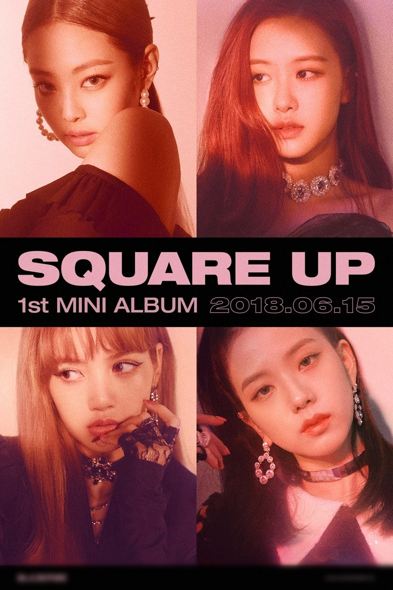

블랙핑크(BLACKPINK)는 YG 엔터테인먼트 소속의 대한민국의 4인조 걸그룹이다.
팀명은 가장 예쁜 색으로 표현되는 핑크를 부정하면서 '예쁜 게 다가 아니다'라는 블랙의 반전 의미를 담고 있다.

2016년 8월 8일 싱글 앨범 'SQUARE ONE' 을 발매하며 <휘파람>, <붐바야>로 데뷔 했다.
2016년 11월 1일 싱글 앨범 'SQUARE TWO'를 발매하고 <불장난>,
2017년 6월 22일 싱글 앨범 <마지막처럼>을 발매해 활동했다.
2018년 6월 15일 미니 앨범 'SQUARE UP'을 발매하며 타이틀 곡 <뚜두뚜두>로 활동했으며, 후속곡 <포에버 영>으로 7월 말까지 활동을 연장했다.